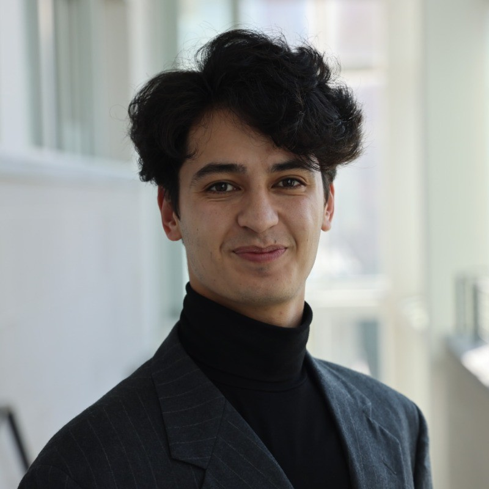

Our Team
The Alignment Arena project brings together researchers focused on understanding and measuring bias in masked language models. Our interdisciplinary approach combines expertise in natural language processing and computational linguistics to evaluate how models reflect societal biases.

Hamid Rezaee
Lead Researcher
Specializing in machine learning, Hamid's work focuses on advanced NLP, predictive modeling, and applied language modeling.
Matthew Wilkens
Advisor
Professor Wilkens is associate professor of information science at Cornell University. He uses quantitative and computational methods to study large-scale developments in literary and cultural history.